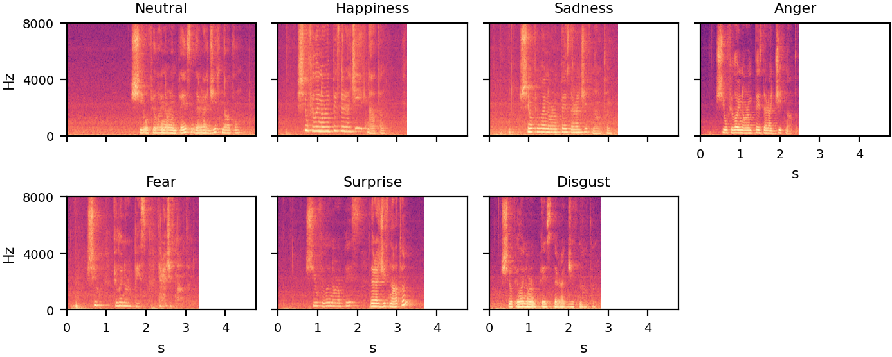
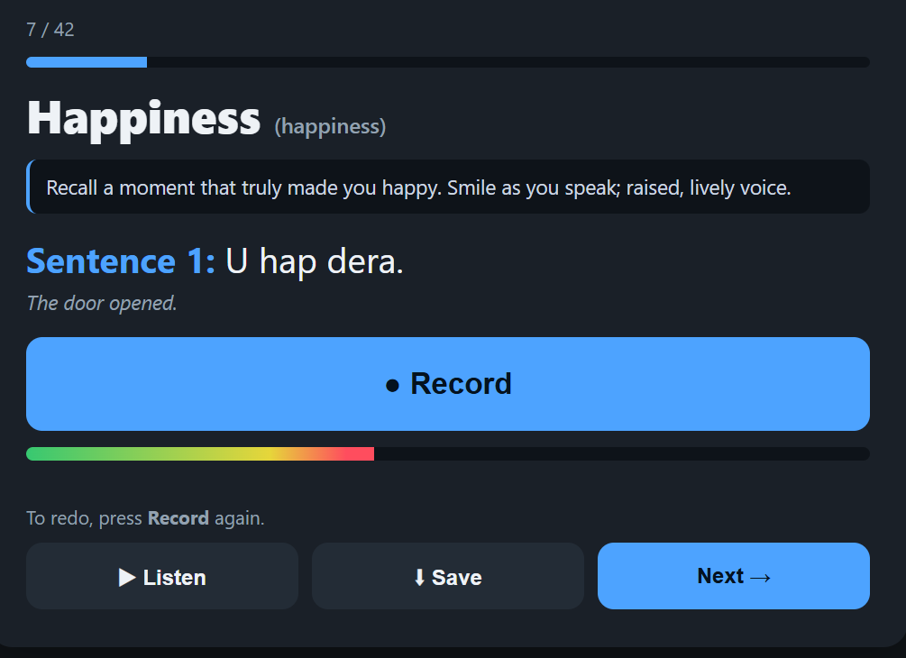
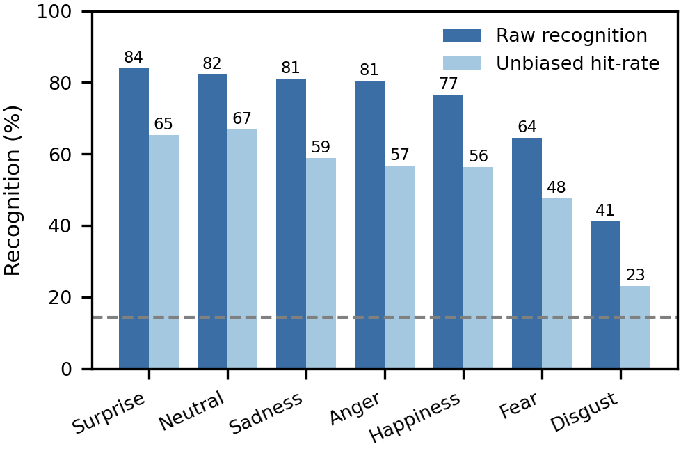
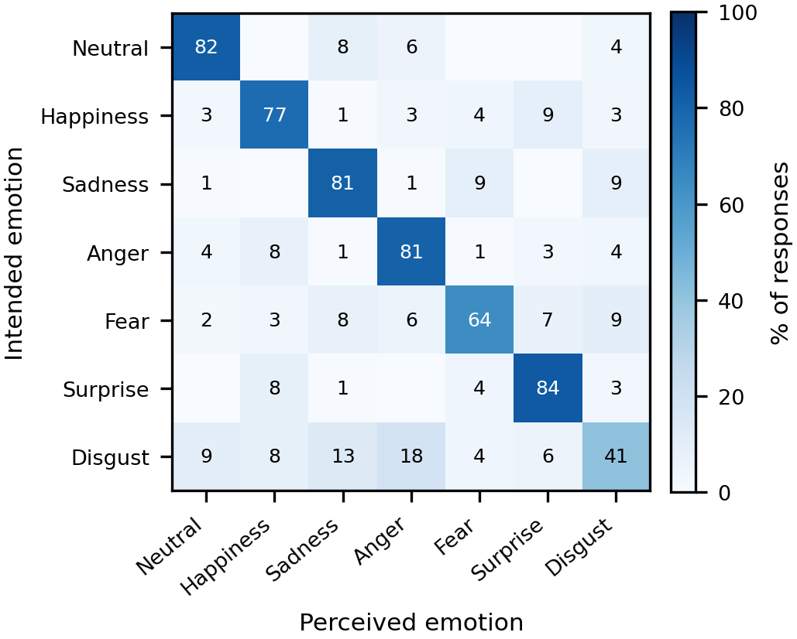

Why Albanian needed one
To teach a computer to hear emotion in a voice, you need recordings of people speaking with emotion, labelled with what each one is meant to express. Collections like this exist for English, German, Mandarin, Bangla and a number of other languages. Albanian, spoken by roughly seven million people, had none, so there was no way even to test whether emotion models built for other languages work for it. AlbEmo closes that gap, in a form directly comparable to the datasets researchers already use.
What is in it
Ten native Albanian speakers, five women and five men, aged from 18 to over 55 and originally from seven regions of Albania, each spoke the same six sentences in seven different emotional styles. The sentences are deliberately ordinary and carry no emotional meaning of their own, so that any emotion a listener hears must come from the voice, not the words. All speakers recorded in Standard Albanian.
| Albanian | English |
|---|---|
| U hap dera. | The door opened. |
| Makina është në garazh. | The car is in the garage. |
| Ajo po flet në telefon. | She is talking on the phone. |
| Letra erdhi dje në mëngjes në adresën time. | The letter came to my address yesterday morning. |
| Dritaret e shtëpisë shohin nga rrugica e vjetër. | The windows of the house look onto the old alley. |
| Shiu filloi në orën pesë dhe ra gjithë natën. | The rain started at five and fell all night. |
The seven styles are a neutral reading plus the six emotions that psychologists most often treat as basic and recognisable across cultures.
- Neutral neutral
- Gëzim happiness
- Trishtim sadness
- Zemërim anger
- Frikë fear
- Habi surprise
- Neveri disgust
It is the same set used by comparable corpora in other languages, so results can be compared directly. Ten speakers, seven emotions and six sentences give 420 recordings, one for every combination. Each is a single sentence of about three seconds, stored as uncompressed audio, and the whole corpus runs to about 22 minutes.

How it was recorded
Each speaker recorded alone, in a quiet office at the University of Tirana in July 2026, using a studio-quality USB microphone and a purpose-built recording tool that runs in a web browser without installation or an internet connection. The tool shows one emotion and one sentence at a time, with a short coaching cue in Albanian asking the speaker to recall a real moment of that emotion and express it a little more strongly than in everyday speech. The speaker presses record, listens back, and re-records as often as they like before moving on.
Recording privately and at one's own pace was a deliberate choice. Expressing emotion on a neutral sentence is self-conscious work, and the speakers were not professional actors. Being alone, with unlimited retakes and nobody watching, lets people commit to the delivery.

The audio is released exactly as recorded, with no noise removal or level adjustment.
How we know the labels are right
A speaker trying to sound afraid does not guarantee that a listener hears fear. For an emotion corpus, the labels are only worth something if other people recognise the intended emotion. So every recording was put to a listening test.
Four native Albanian listeners took part. Each heard recordings one at a time, in a shuffled order, with no indication of the intended emotion or the file name, and chose one of the seven categories. Every recording was judged by three of the four listeners, which gives 1,260 judgements in total. Nobody rated their own recordings.
Across the whole corpus, listeners picked the intended emotion 73% of the time. Guessing among seven options would get about 14%. Surprise was the easiest to recognise, at 84%, and disgust the hardest, at 41%. Disgust is notoriously hard to convey from the voice alone, in other languages too.

The mistakes are as telling as the hits. The chart below shows, for each intended emotion, what listeners actually heard. The strong diagonal means the intended category always won. Where errors occur they follow familiar lines. Disgust was most often mistaken for anger or sadness, and happiness and surprise were occasionally taken for each other.

A second question is whether the listeners agree with each other. Statisticians summarise this with an agreement score from 0 (no better than chance) to 1 (everyone always agrees), known as Fleiss' kappa. For AlbEmo it is 0.59, in the "moderate" band and on a par with the best-known acted corpora in Bangla and English. Every individual judgement is released with the audio, so users can give more weight to the clips everyone agreed on.
A reference point for machines
As a check that the recordings carry emotional information a computer can pick up, the paper reports a simple baseline. A general-purpose speech model called WavLM converts each recording into a list of numbers, and a basic classifier then tells the seven emotions apart for each speaker. It gets 74% right, on a par with the German and English corpora the design is modelled on.
Ethics and consent
The study was approved by the Ethics Council of the University of Tirana. All participants were adults, gave written informed consent in Albanian and English, and were paid for their time. Speakers and listeners appear in the released data only as anonymous codes.
Get the data
Corpus. Archived on Zenodo at doi.org/10.5281/zenodo.21638085 under a Creative Commons Attribution 4.0 licence, free to download without registration. The deposit holds the audio, the metadata and the anonymised listening-test responses.
Tools and scripts. The recording tool, the listening-test tool and the analysis scripts are in a public code repository at github.com/thomouvic/albemo-public. The tools need no server and no installation, so the same protocol can be applied to another language.
Paper. Loka, Lili, Kika, Ktona, Mëniku and Thomo, "AlbEmo: A perceptually validated emotional speech dataset for Albanian," Data in Brief 69 (2026) 113282, open access at doi.org/10.1016/j.dib.2026.113282.
The recordings themselves live on Zenodo, where you can listen to them.